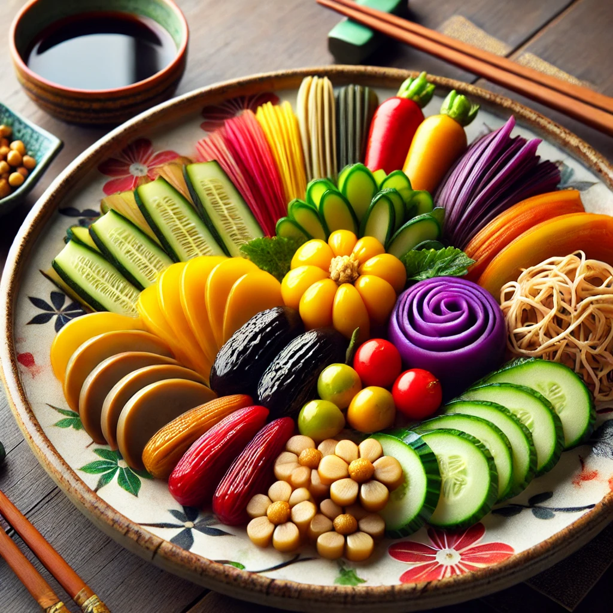
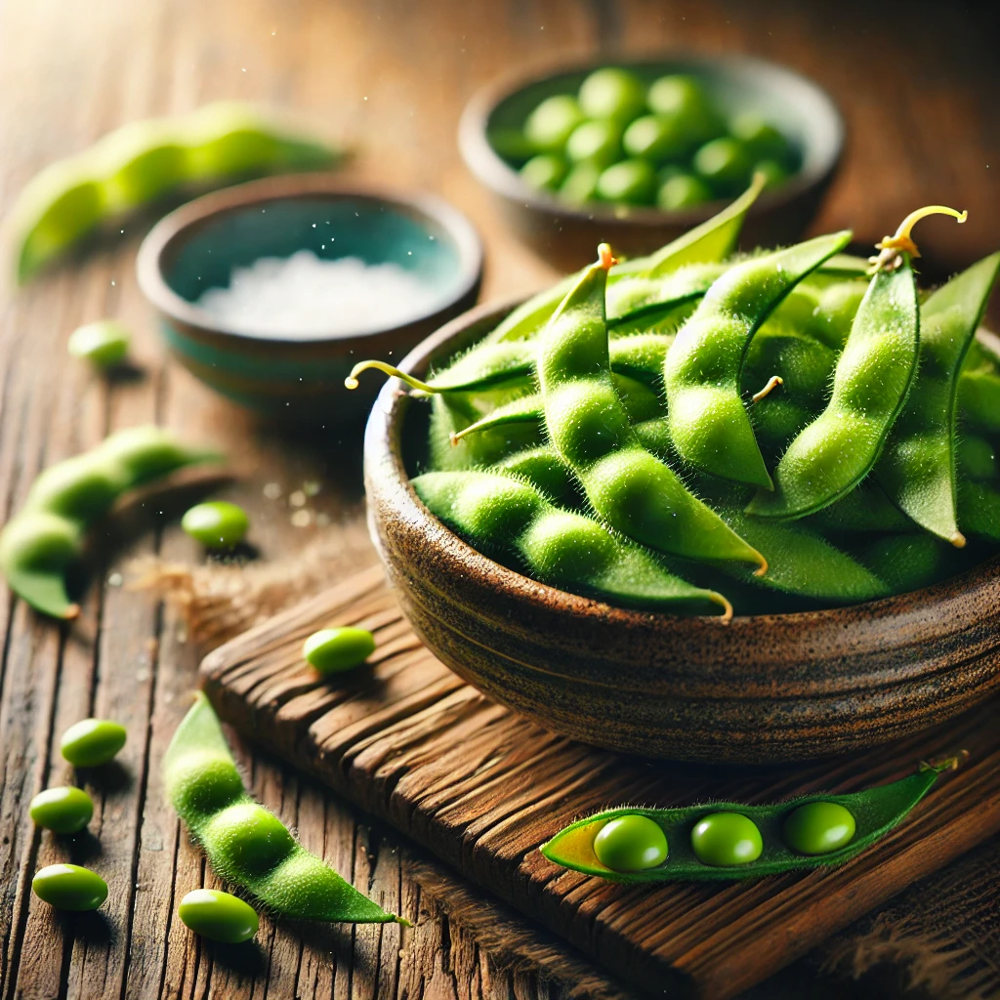
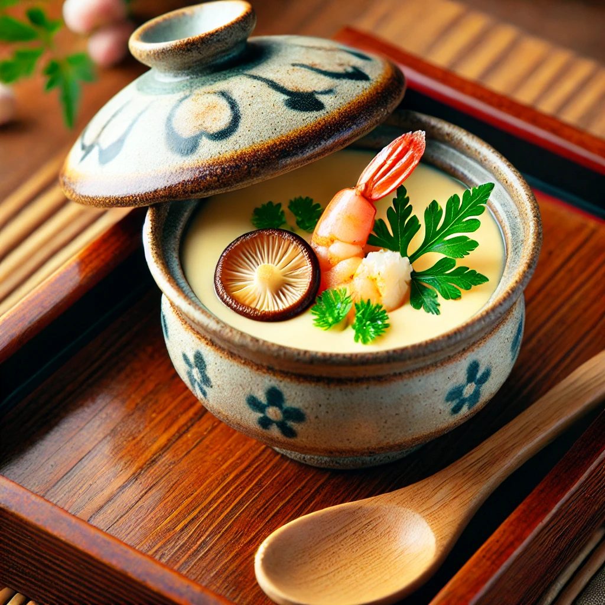
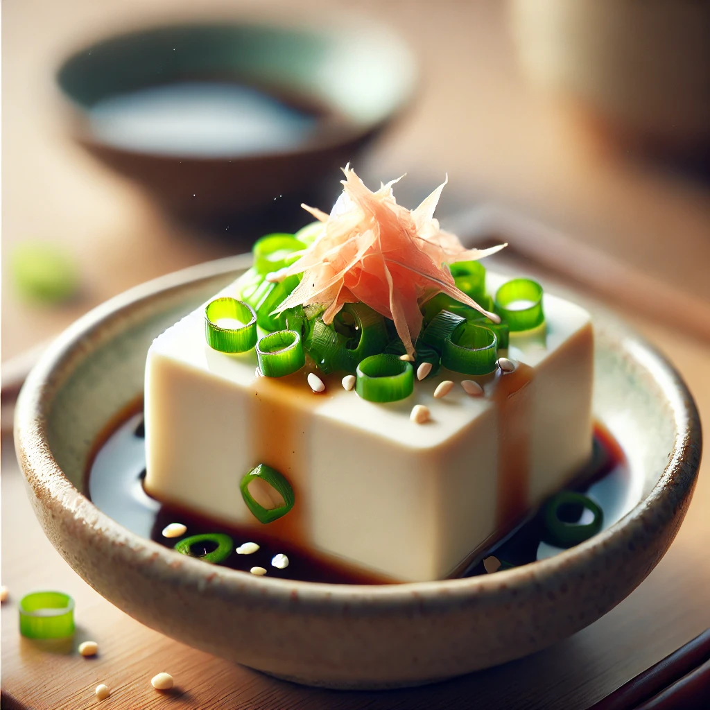

醋物 (Sunomono)
日式醋漬料理，口感清爽酸甜，常以海帶、黃瓜或海鮮為主。

漬物 (Tsukemono)
醃製蔬菜，鹹香脆口，是日式料理中的定番配菜。

毛豆 (Edamame)
日式居酒屋必備小點，簡單鹽水煮，富含蛋白質與纖維。

茶碗蒸 (Chawanmushi)
日式蒸蛋，口感滑嫩，內含海鮮、雞肉、銀杏等配料。

牛蒡絲 (Kinpira Gobo)
用牛蒡絲與紅蘿蔔炒製，醬香濃郁且富含膳食纖維。

冷奴豆腐 (Hiyayakko)
冷豆腐淋上醬油，搭配蔥花、柴魚片、薑泥等配料，清爽可口。